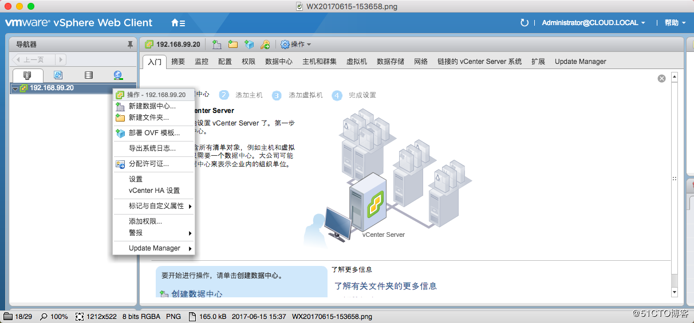

VMware vSphere 6.5 配置文档
一. 添加管理主机
1.1 新建数据中心

1.2 新建集群
1.3 集群的配置，DRS动态迁移功能，HA功能，是否打开
1.4 添加主机
1.5 输入主机ip
1.6 账号密码
1.7 分配许可证（如果没有，跳过即可）
1.8 保持默认设置就好，如果启用，将无法直接登录主机了
1.9 下一步
1.10 完成
二. 证书注册
1.添加许可证
2.点这个加号进入创建许可证界面
3.一个一行，可添加多个许可证，重点是vCenter 用vCenter server6 standard这个许可，ESXI主机用vSphere 6 Enterprise Plus (支持6个cpu，也就是3台主机）这个许可。
4.添加完成界面
5.给vCenter分配许可证
三. 集群功能配置
选中集群右键，然后设置
点击编辑，就可以对集群的功能进行设置
DRS 分布式资源调度,可以持续不断地监控资源池的利用率,动态地分配和平衡计算容量.通过vMotion功能能够在不需要停机的情况下将整台正在运行的虚拟机在物理服务器之间迁移。十分有用的一个功能，选择打开。
HA我们也打开，保证vSphere的高可用性。这里需要注意，HA要用到存储，所以我们需要先挂载存储，而且需要挂载至少2个存储。如果只有一个，会有×××感叹号报错。
“Configuration Issues，该主机的vSphere HA 检测信号数据存储数目为1，少于要求数目2 “
四. 创建标准虚拟交换机
在vcenter管理页面选中要添加交换机的主机，右键添加网络
选择vmkernel网络适配器
新建标准交换机
选择物理网络适配器
配置交换机名称和vlan
配置IP地址
完成
五. 创建分布式虚拟交换机
选择资源池，网络，新建distributed switch
设置名称,ds_yewu
选择版本
设置上行链路数，创建分布式端口组ds_vlan208
点击完成，就创建了一个DS switch1的分布式交换机
然后添加主机进来，就是把交换机关联主机
选择主机
网络适配器任务
将vmnic3这块物理网卡分配给交换机DSwitch 1
下一步
编辑端口组，设置vlan
这里设置vlan，就可以给主机分配不同的vlan
六.端口组配置dhcp地址池（此功能可不配置，一般机房环境不会开DHCP）
选中要开启dhcp的端口组，注意右上角的链接符
创建新的网络协议
配置名称vlan208
设置pool的范围，这里默认24位掩码
没有IPv6，下面的配置默认或直接点击完成
端口组的其他配置
设置端口数，每一台虚拟机会占用一个端口
配置VLAN ID 很重要
七. 挂载网络存储
选中资源池，数据存储，新建数据存储
这里用NFS网络存储
选择版本,选版本用NFS 3，发现用NFS 4.1会连接不上
填写挂载存储的名称，地址，服务器IP
选择要挂载的ESXI主机
完成
1
分享
收藏